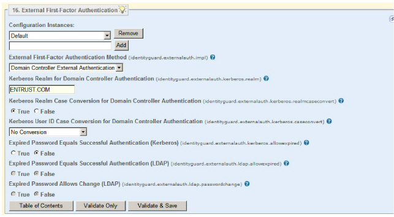

|
IdentityGuard Server 13.0 Administration Guide |
|
IdentityGuard Server 13.0 Administration Guide |
There are two sources available for external authentication: a Windows domain controller or an LDAP directory. This section describes how to set properties for using a domain controller for authentication. For a complete list of properties, see External First-Factor Authentication.
Note: If you are using Entrust IdentityGuard Radius configured to use external authentication (Kerberos or LDAP), you must configure the VPN to use PAP.
When you choose to use a domain controller for first-factor authentication as described below, you must also configure the Kerberos Key Distribution Center (KDC) map file. For details, see Configuring the KDC map file.
Pre-configuration step: Synchronize clocks
1. Ensure that the clock on your domain controller is synchronized with the clock on your Entrust IdentityGuard server. Kerberos authentication is time-sensitive, so if the clocks are not synchronized, authentication fails.
To use a domain controller for external authentication
1. Start the Entrust IdentityGuard Properties Editor. (See Log in or out of the Properties Editor)
2. On the Table of Contents, click External First-Factor Authentication.

3. Under Configuration Instances, do one of the following:
● If you are not using Entrust IdentityGuard groups, select Default to modify the default configuration.
● If are using Entrust IdentityGuard groups, and want to have a configuration instance apply to only one of those groups, enter the name of the Entrust IdentityGuard group in the empty field and click Add.
When you include a group name as part of a configuration instance, it sets external authentication for just members of that group.
One reason to use Entrust IdentityGuard groups is if you are using multiple Kerberos servers. In this case, you must set up one Entrust IdentityGuard group per Kerberos server: users in the first group authenticate against the first configured Kerberos server, while users in the second group authenticate against the second configured Kerberos server, and so on.
For more information, see Using groups with external authentication.
To see an example configuration using groups, see Using external authentication for first-factor authentication.
4. In the External First-Factor Authentication Method drop-down list, select Domain Controller External Authentication.
5. Domain controller authentication uses the Kerberos protocol. Under Kerberos Realm for Domain Controller Authentication, type, in uppercase letters, the server acting as the Kerberos realm or domain. For example:
ENTRUST.COM
6. Kerberos authentication is case-sensitive. If the user enters an ID that does not match the case Kerberos expects, the authentication fails. If applicable, select the conversion option from the Kerberos User ID Case Conversion for Domain Controller Authentication drop-down list:
● No Conversion means leave the case as is.
● Lowercase means switch the case to all lowercase.
● Uppercase means switch the case to all uppercase.
● User Principle Name (UPN) means, for a domain controller, switch the user ID to the form id@DOMAIN; that is, the id is always lowercase, and the DOMAIN is always uppercase.
7. If applicable, set the Expired Password Equals Successful Authentication (Kerberos) property to True.
When set to True, first-factor authentication succeeds even if the user's password has expired. Your domain controller must ensure the user and password are still valid; that is, make sure that the only problem is that the password has expired.
Note: In this configuration, you cannot change the password from the VPN client. Setting the Expired Password Equals Successful Authentication (Kerberos) property to True allows you to access the network to change the password.
8. Click Validate & Save.
9. Log out of the Properties Editor and restart the Entrust IdentityGuard server service.